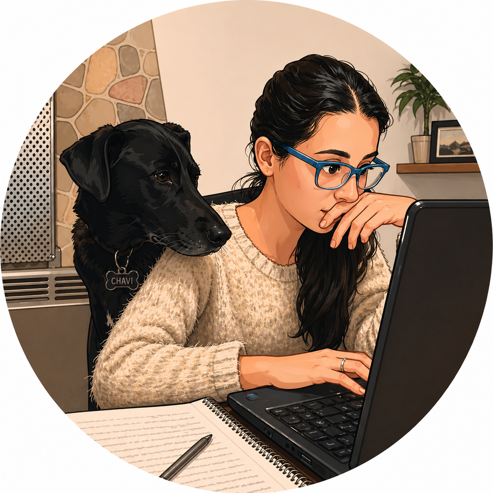

Lucrecia Vigo
Estudiante de la Tecnicatura Superior en Desarrollo de Software. Me gusta la programación, en particular la orientación hacia el backend y las bases de datos. Disfruto aprender sobre nuevas tecnologías, probar herramientas y construir proyectos que me permitan seguir creciendo en el área de software.
Datos
Ubicación actual
Casilda, Santa Fe, Argentina
Edad
40 años
Habilidades
- PHP
- Python
- MySQL
- JavaScript
Peliculas favoritas
- Una mente brillante
- Bastardos sin gloria
- UP: una aventura de altura
Discos musicales favoritos
- Mediterráneo - Joan Manuel Serrat
- ¿Dónde están los ladrones? - Shakira
- Vasos vacíos - Los fabulosos Cadillacs
Más sobre mí
Me gusta mucho
- Leer. No me imagino la vida sin libros, son mi compañía desde muy pequeña.
- Viajar. Nada como conocer lugares nuevos y ver paisajes de ensueños.
- Tener animales cerca. Pelos, plumas, escamas y exoesqueletos, en ese orden.
En el futuro quisiera
- Seguir aprendiendo siempre, de áreas nuevas y variadas.
- Contribuir a proyectos que tengan un impacto positivo en la sociedad.
- Tener más confianza en mis ideas locas y llevarlas a cabo.
¿Cómo estás hoy?
Te recomiendo algo según tu humor:
Película:
Disco:
Actividad: